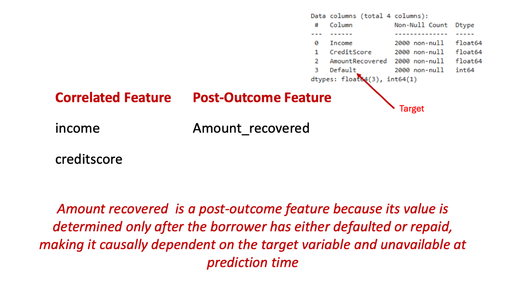
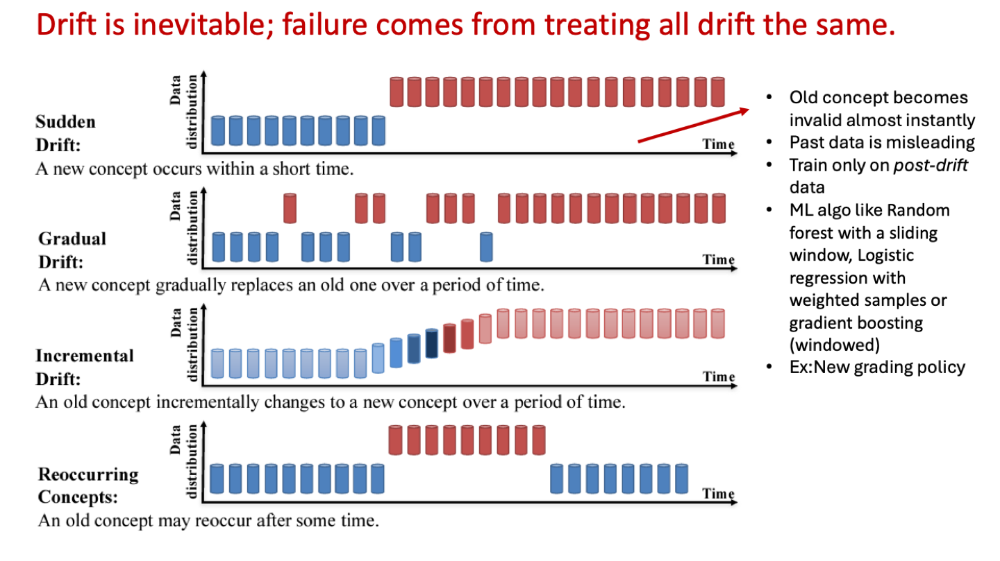
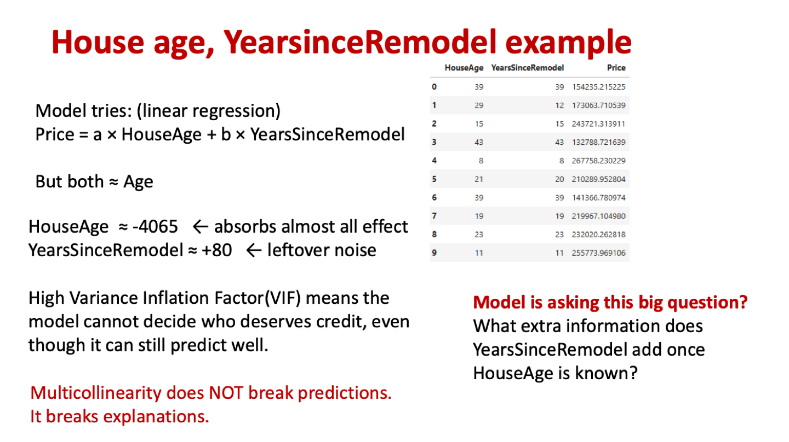
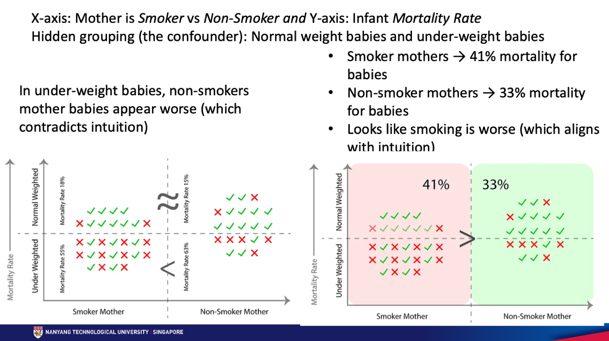
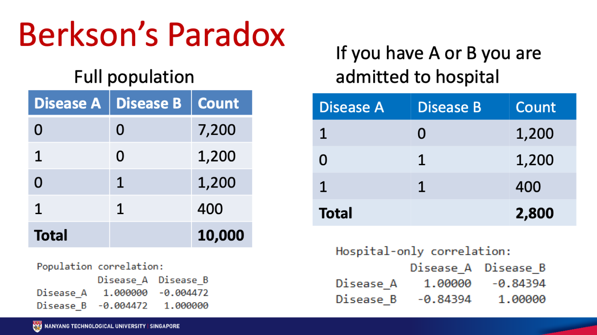

第四周：EDA 陷阱与悖论
模型跑出来、指标很好看，不代表结论可信。本周讲两件事：周二的 EDA 风险清单（按严重程度分三层），周六的五个悖论（数据“说谎”的五种方式）。
Three tiers of EDA risks｜先看全局
本章图表 / 方法：周二课件把 8 种风险按“伤害有多深”分成三层（Tier 1 第 7 页、Tier 2 第 12 页、Tier 3 第 13 / 17 页）。
| 层级 | 包含哪些风险 | 后果 | 能不能靠调模型修好 |
|---|---|---|---|
| Tier 1 模型失效 | Target leakage、Sampling bias、Temporal leakage | 结果根本是错的：测试分数虚高，上线即崩 | 不能。换模型、调参、加数据都没用，必须重新设计数据集 |
| Tier 2 解释与稳定性 | Multicollinearity、Label noise、Outlier semantics | 指标看着正常，但解释、稳定性、公平性不可靠 | 短期不掉分，长期损害信任 |
| Tier 3 兼容与优化 | Scaling / skew、Dimensionality / redundancy | 模型能用但不够好 | 常被误认为“模型太弱”，其实根源在预处理 |
记忆法：Tier 1 问“结果对不对”，Tier 2 问“解释靠不靠谱”，Tier 3 问“效率高不高”。Tier 1 要守住三件事：目标没有泄漏、数据代表真实人群、时间往前走模型还能用。
Target Leakage & Target Validity｜偷看了答案
本章图表 / 方法：贷款违约例子：income、credit score 与 AmountRecovered 对比（第 2–3 页）；Notebook 对比有无泄漏特征的准确率。
一句话：特征里藏着目标本身，或者用了结果发生之后才知道的信息。训练时准确率高得离谱，上线时这个特征根本拿不到。
- 要检查：直接或间接由 target 算出来的特征；用了未来信息的特征（post-outcome feature）。
- 经典例子：用 FinalGrade（期末总评）预测 Pass/Fail；用 AmountRecovered（追回金额）预测是否违约。


| Correlated feature（相关特征） | Post-outcome feature（结果后特征） | |
|---|---|---|
| 什么时候存在 | 决策之前就有 | 结果之后才有 |
| 本质 | 预测信号 | 结果的代理（proxy） |
| 能不能用 | 合法 | 不合法，必须删掉 |
| 贷款例子 | Income、CreditScore | AmountRecovered：只有借款人还款或违约后才能确定 |
Notebook 结果：准确率从 0.696 跳到 1.0
# 2000 个借款人；违约概率由收入和信用分决定，并加入噪声
amount_recovered = (1 - default) * np.random.uniform(5000, 20000, n)
# 违约者 AmountRecovered 一定是 0，没违约的一定 > 0 → 几乎等于答案
X = df.drop(["Default", "AmountRecovered"], axis=1) # 只用合法特征
# Accuracy: 0.696
X = df.drop("Default", axis=1) # 加入泄漏特征
# Accuracy: 1.0满分不是模型变强了，而是模型直接“看到了答案”：AmountRecovered = 0 就是违约。看到准确率接近 100%，第一反应应该是查泄漏，而不是庆祝。
判断口诀：问一句“预测的那一刻，这个值已经存在了吗？”不存在就是泄漏。
Data Representativeness & Sampling Bias｜样本不像总体
本章图表 / 方法：三个有偏数据集例子（第 4 页）；Notebook 自愿满意度调查：总体与回复者分布对比、各评分回复率柱状图。
一句话：模型只能推广到它见过的人群。数据缺了谁，模型就对谁失效，而且评估指标也一起失真。
- 要检查：数据里缺了谁？数据怎么收集的？能否代表真实人群？
- 课件例子：只有已批准申请人的贷款数据（被拒的人永远看不到结果）；只来自一家医院的医疗数据；只来自尖子学校的学生数据。
- 课件金句：Class balance ≠ population balance。类别平衡了，不等于人群有代表性。
Notebook：自愿调查只有极端意见的人回复
1000 名客户中只有 202 人回复。满意度 1 分和 5 分的人更愿意填问卷：
| 满意度 | 1 非常不满 | 2 | 3 中立 | 4 | 5 非常满意 |
|---|---|---|---|---|---|
| 真实总体 | 8.0% | 18.0% | 48.0% | 18.0% | 8.0% |
| 调查回复者 | 36.6% | 12.4% | 10.9% | 7.4% | 32.7% |
均值几乎没变（总体 3.0，样本 2.87），但极端意见占比从 16% 变成 69.3%。只看均值会以为样本没问题。要比较整个分布，再画“各评分的回复率”找出偏差的机制。
respondents = df[df["Survey_Responded"] == 1]
population_pct = df["Satisfaction_Rating"].value_counts(normalize=True).sort_index() * 100
survey_pct = respondents["Satisfaction_Rating"].value_counts(normalize=True).sort_index() * 100
response_rate = df.groupby("Satisfaction_Rating")["Survey_Responded"].mean() * 100Temporal Leakage & Concept Drift｜忽略时间
本章图表 / 方法：学生成绩跨年例子（第 5–6 页）；四种漂移类型示意图及应对（第 7–10 页）；Notebook 随机划分与按时间划分的准确率对比。
一句话：Concept drift 是 X 和 y 之间的关系随时间变了。随机划分训练 / 测试集会把“未来”混进训练集，测试分数虚高，上线后迅速变差。
课件金句：A model that ignores time assumes the world never changes.
- 要检查：特征或标签有没有时间依赖；特征和目标的关系是否随时间变化；训练 / 测试划分有没有尊重时间顺序。
- 三步应对：① 检测漂移 ② 调整模型 ③ 选择对漂移稳健的算法。
Notebook：2021 年评分变严，随机划分高估了表现
3 年数据，每年 1000 个学生，学习时长分布相同；但 2021 年及格线从 5.0 小时提高到 5.6 小时。
| 划分方式 | 做法 | 准确率 |
|---|---|---|
| 随机划分（错误） | 三年混在一起，70/30 随机分 | 0.760 |
| 按时间划分（正确） | 用 2019–2020 训练，2021 测试 | 0.715 |
随机划分时，训练集里已经有 2021 年的样本，模型提前学到了新规则，测试分数自然偏高。按时间划分才是上线后的真实情况：用过去预测未来。
train = df[df["Year"].isin([2019, 2020])] # 只用过去
test = df[df["Year"] == 2021] # 预测未来
m2 = LogisticRegression().fit(train[["StudyHours"]], train["Pass"])
accuracy_score(test["Pass"], m2.predict(test[["StudyHours"]])) # 0.715四种漂移，四种应对


| 类型 | 长什么样 | 怎么处理 | 课件例子 |
|---|---|---|---|
| Sudden 突变 | 短时间内换成新概念，旧概念几乎立刻失效 | 旧数据会误导，只用漂移后的数据训练 | 新的评分政策 |
| Gradual 渐变 | 新旧概念并存，新的比例越来越高 | “有控制地遗忘”：滑动窗口（只用最近 N 个月）、时间衰减权重（越新的样本权重越高） | 市场行为变化 |
| Incremental 增量 | 平滑连续地变化，没有明确的“之前 / 之后” | 增量更新模型、自适应学习率 | 通货膨胀、技能随时间积累 |
| Recurring 周期 / 复现 | 旧概念会再次出现 | 不能忘掉旧模型：按情境选择模型、meta-learning（学会何时切换）、带状态检测的集成 | 疫情时期与非疫情时期 |
课件列出的算法：带滑动窗口的 Random Forest、带样本权重的 Logistic Regression、窗口化的 Gradient Boosting；渐变漂移还提到时间序列的 Kalman filter。
易错：突变要“忘掉过去”，周期要“记住过去”，方向正好相反。考题给出场景时，先判断是哪种漂移。
Multicollinearity｜不伤准确率，伤解释
本章图表 / 方法：HouseAge 与 YearsSinceRemodel 例子（第 11–13 页）；VIF；EffectiveAge 与 PCA 对比（第 14 页）；Notebook 系数与 VIF 输出。
一句话：两个预测变量高度相关时，模型不知道该把功劳记给谁。预测照样准，但系数会乱跳、甚至变号，特征重要性和政策解释都不能信。
- 要检查：预测变量之间的强相关；VIF > 5–10；冗余的工程特征；语义重叠的变量。
- VIF 公式：
VIF = 1 / (1 − R²)，R² 是用其他特征回归这个特征得到的。R² = 0.9 → VIF = 10；R² = 0.8 → VIF = 5。 - 课件金句：Multicollinearity does not kill accuracy — it kills explanations.


Notebook 数字
| 模型 | HouseAge 系数 | YearsSinceRemodel 系数 |
|---|---|---|
| 两个一起放 | −4065 | +80（应为负，结果变号） |
| 只用 HouseAge | −3989 | — |
| 只用 YearsSinceRemodel | — | −3705 |
房子越老越便宜、越久没翻修越便宜，所以两个系数都应该是负的。放在一起时，HouseAge 吸走了几乎全部效应，YearsSinceRemodel 只剩噪声，变成 +80。两者的 VIF 都是 35.67，即 R² ≈ 0.97：一个变量约 97% 的信息能被另一个解释，只剩约 3% 是独立信息。
from statsmodels.stats.outliers_influence import variance_inflation_factor
X_both = df[["HouseAge", "YearsSinceRemodel"]]
[variance_inflation_factor(X_both.values, i) for i in range(X_both.shape[1])]
# [35.67, 35.67] → 远超 5–10 的警戒线怎么修：删掉冗余，或合并成一个有意义的特征
| PCA | EffectiveAge = min(HouseAge, YearsSinceRemodel) |
|---|---|
| 去掉相关性 | 去掉冗余 |
| 丢失含义（主成分是混合方向） | 保留含义：“翻修过的房子按翻修后算年龄” |
| 难解释 | 好解释 |
| 以模型为中心 | 以领域知识为中心 |
课件结论：需要可解释性时，优先用领域知识合并特征，而不是盲目降维。
Notebook 细节：EffectiveAge 的系数是 −3705，和只用 YearsSinceRemodel 完全一样。原因是数据生成时 YearsSinceRemodel 已被限制为 ≤ HouseAge，所以 min() 的结果就等于 YearsSinceRemodel。
Label Noise & Outlier Semantics｜标签和异常值的“含义”
本章图表 / 方法：情感标注例子（第 15 页）；罕见病例子（第 16 页）。
Label noise：标签本身错了或不一致
- 要检查：错误标签；不一致标签（同一输入因标注员、时间、情境不同而得到不同标签）；代理标签，比如自评问卷“1–10 分，你压力多大”。
- 课件例子：“The phone is amazing, but the battery dies in 3 hours.” 有人标 Positive（手机很棒），有人标 Neutral（一好一坏），有人标 Negative（电池太差）。主观理解和标注疲劳都会造成噪声。
- 后果：决策边界变模糊；正则化救不了错误标签；加数据、调参也去不掉。
Outlier semantics：先问异常值代表什么
- 定义：理解异常值在现实中代表什么，而不只是看它在统计上是否极端。异常值不一定是噪声或错误，可能是有效、罕见但重要的子群体。
- 课件例子：一种只占人口 1% 的遗传病。统计上它是异常值，删掉后模型永远学不到这种病的模式。
- 后果：删掉异常值后指标变好、分布更“正常”，但罕见群体被抹掉，决策边界偏向多数人。
这里接上第一周：IQR 或 Z-score 只能找出候选异常值，删不删要看业务含义。
Tier 3: Scaling & Dimensionality｜效率问题
本章图表 / 方法：Tier 3 对照表（第 17 页）。
| 风险 | 为什么看起来没问题 | 实际问题 | 回顾 |
|---|---|---|---|
| Feature scaling 与分布形状（skew） | 模型能训练，小数据集上指标还行 | 距离类模型被大尺度特征主导；重尾 / 偏态特征主导梯度 | 第二周：四种 scaler、Box-Cox / Yeo-Johnson |
| Dimensionality 与特征冗余 | 加特征后训练表现先变好 | 训练时间、内存、推理成本增加；冗余特征增大方差和过拟合风险 | 第三周：PCA |
Correlation vs Causation｜相关不等于因果
本章图表 / 方法：可视化与相关性三大陷阱（周六第 2 页）；冰淇淋与溺水、消防员与财产损失、吸烟与肺癌、运动与减重（第 3–9 页）。
| 陷阱 | 错在哪 | 怎么避免 |
|---|---|---|
| 把相关当因果（spurious correlation） | 相关系数高就认为一个导致另一个 | 用领域知识和因果检验；相关只衡量线性关联 |
| 忽略多重共线性 | TotalSF 和 GrLivArea 同时放进线性回归 | 用热力图看相关，处理高相关特征 |
| 可视化太表面 | 只看散点图找线性关系 | 箱线图（类别 vs 数值）、pair plot（多对多）、直方图（分布）都要用 |
相关可能来自三种原因：代理（proxy）、混杂（confounded）、巧合（coincidental）。
| 例子 | 只是相关还是因果 | 原因 |
|---|---|---|
| 冰淇淋销量 ↑，溺水 ↑ | 只是相关 | 第三个变量气温同时推高两者 |
| 消防员多的城市，财产损失大 | 只是相关 | 混杂变量城市规模：大城市财产多，消防员也多 |
| 吸烟与肺癌 | 因果 | 大量研究、实验证据和合理机制 |
| 运动频率与体重（负相关） | 因果 | 干预实验和对照试验支持 |
证明因果需要什么：对照实验、随机对照试验（RCT）或其他严格的研究设计。观察性研究和统计分析只能得到相关。
Confounder（混杂变量）：同时影响 X 和 Y、但没被纳入分析的变量。忽略它会把效应算到错误的变量上，甚至让关联方向在调整后翻转。
Simpson’s Paradox｜合起来和分开看，结论相反
本章图表 / 方法：吸烟母亲与婴儿死亡率，按出生体重分层（周六第 12–20 页）；Notebook 汇总与分层死亡率表、体重构成柱状图。
一句话：每个子组的趋势一致，合并后却反过来（或消失）。原因是各组的基线不同、组成比例也不同，合并时被“平均掉”了。


把数字算一遍（Notebook 输出）
| 分组 | 吸烟母亲 | 不吸烟母亲 | 哪边更高 |
|---|---|---|---|
| 正常体重婴儿 | 2/11 = 18.2% | 2/13 = 15.4% | 吸烟略高（差不多） |
| 低体重婴儿 | 10/18 = 55.6% | 5/8 = 62.5% | 不吸烟更高（反直觉） |
| 合并 | 12/29 = 41.4% | 7/21 = 33.3% | 吸烟更高 |
为什么会反过来
- 吸烟母亲的低体重婴儿多得多：18/29 = 62.1%，不吸烟母亲只有 8/21 = 38.1%。
- 低体重婴儿死亡率高得多：15/26 = 57.7%，正常体重只有 4/24 = 16.7%。
- 所以合并后的差距主要来自“高风险婴儿的比例不同”，而不是同等体重下吸烟的直接效应。
怎么解决：把混杂变量（出生体重）固定住，在同一体重组内比较吸烟与否。课件提出的关键问题是：同样体重的婴儿中，吸烟还会提高死亡率吗？还是吸烟提高了低体重的概率，而低体重大幅提高死亡率？
课件结论：三个事实在统计上都成立，但只有分层分析能揭示因果机制。课件认为合并结果（吸烟更危险）在因果上是对的，因为吸烟正是通过导致低体重来提高死亡率；Notebook 里把出生体重称为 collider。
agg = df.groupby("smoking_group")["mortality"].agg(["mean", "sum", "count"])
strat = df.groupby(["bw_group", "smoking_group"])["mortality"].agg(["mean", "sum", "count"])
mix = df.groupby("smoking_group")["underweight"].mean() # 各组低体重比例：0.381 vs 0.621为什么在数据科学里危险：公平性结论被误导、特征重要性错误、政策和治理失败、法律与伦理风险。
Berkson’s Paradox｜只看筛选后的人，制造出假相关
本章图表 / 方法：心脏病与肺病、住院数据（周六第 22–24 页）；Notebook 总体与住院子集的相关系数。
一句话：数据只包含被某个条件筛选进来的人，两个本来无关的变量就会出现（通常是负的）相关。


- 机制：“住院”同时由 A 和 B 决定，是一个 collider。只看住院病人，等于删掉了 A=0 且 B=0 的 7,200 人。
- 在住院数据里看到的假规律：“得了 A 的人不太会得 B。”在总体中并没有这个关系。
- Notebook 结果：A、B 独立生成；总体相关系数 −0.004（几乎为 0），住院子集变成 −0.844。
df["Admitted"] = ((df["Disease_A"] == 1) | (df["Disease_B"] == 1)).astype(int)
df[["Disease_A", "Disease_B"]].corr() # 总体：-0.004
hospital = df[df["Admitted"] == 1]
hospital[["Disease_A", "Disease_B"]].corr() # 住院：-0.844课件勘误：第 23 页的计数表和下方的相关系数不是同一份数据。按表中数字算，总体相关约 +0.11（P(A∩B)=0.04 > 0.16×0.16），住院子集约 −0.75。相关系数截图来自 Notebook 的随机模拟。两份数据结论相同：筛选后出现了总体中没有的负相关。
和 Simpson 的区别（课件原话）：Simpson’s paradox comes from averaging across groups. Berkson’s paradox comes from selecting / filtering into groups.
Accuracy Paradox & False Prediction Paradox｜指标在说谎
本章图表 / 方法：欺诈检测与罕见病筛查（周六第 25–27 页）；Notebook 违约分类报告、罕见病混淆矩阵与 NPV。
| Accuracy paradox | False prediction paradox | |
|---|---|---|
| 关注点 | 整体准确率 | 预测为正的结果有多少是真的 |
| 症状 | 准确率高，模型没用 | 大部分阳性预测是错的 |
| 失效的指标 | Accuracy | Precision（阳性预测值） |
| 根源 | 多数类主导指标（类别不平衡） | 基础比率效应（base rate）：病本身太罕见 |
| 要问的问题 | “模型整体好吗？” | “阳性预测能信吗？” |
Accuracy paradox
课件例子：99% 正常交易、1% 欺诈，模型全猜“正常”，准确率 99%，欺诈检出率 0%。
Notebook（5% 违约，测试集 1500 人）：准确率 0.95 看起来很好，但违约类 recall 只有 0.20。
| 预测 SAFE | 预测 RISKY | |
|---|---|---|
| 实际 SAFE（1417） | 1413 | 4 |
| 实际 RISKY（83） | 66 漏掉 | 17 |
解法：看 recall、F1 和按类别的混淆矩阵；用 class weighting 或重采样（第二周的 SMOTE 等）。
False prediction paradox
10,000 人中只有 100 人患病（1%）。Notebook 把阈值故意压低到 0.10：
| 预测无病 | 预测有病 | |
|---|---|---|
| 实际无病（9900） | TN = 9773 | FP = 127 |
| 实际有病（100） | FN = 63 | TP = 37 |
- Accuracy = (9773 + 37) / 10000 = 98.1%
- Recall = 37 / 100 = 37%
- Precision = 37 / (37 + 127) = 22.56%：说“有病”的人里，约 77% 其实没病
- NPV（Negative Predictive Value）= TN / (TN + FN) = 9773 / 9836 ≈ 99.36%：说“没病”几乎都对
Notebook 总结：这个模型擅长让人安心，却不擅长诊断（excellent at reassurance but terrible at diagnosis）。病越罕见，即使模型不错，阳性预测也越不可信。
课件第 27 页把 precision 写成 “When the model predicts SAFE, how often is it actually SAFE?”，这是把 SAFE 当成关注的那一类来问。在罕见病例子里，“预测没病时有多可信”对应的是 NPV。考试按标准定义答：precision = TP / (TP + FP)，看预测为正的那一列；NPV = TN / (TN + FN)，看预测为负的那一列。
Ecological Fallacy｜用群体推个人
本章图表 / 方法：Ecological fallacy 与 Simpson 对比表（周六第 28 页）；Notebook 两所学校学习时长与成绩的组内 / 合并 / 组均值斜率。
一句话：用国家、学校、社区等群体层面的汇总数据，去推断个人层面的行为。群体之间的关系，不一定在群体内部或个人身上成立。
Notebook：同一份数据，三个斜率
| 怎么算 | 学习时长 → 成绩的斜率 |
|---|---|
| 学校 A 内部 | −0.821 |
| 学校 B 内部 | −1.158 |
| 忽略学校，所有人一起拟合 | +2.009 |
| 只用两所学校的平均值 | +2.909 |
A 校平均学习时长更长、基础分也更高，所以“学校层面”看是学得越多分越高。但在每所学校内部，学得越多的反而是基础弱的学生，斜率为负。用学校平均数说“这个学生多学就会提分”，就是 ecological fallacy。
| Ecological fallacy | Simpson’s paradox | |
|---|---|---|
| 核心错误 | 从群体推到个人 | 合并后的趋势在分层后反转 |
| 数据层级 | 群体 vs 个人（不同层级） | 同一批个体，分成不同层 |
| 有没有反转 | 解释层面的错误 | 有，反转是关键 |
| 混杂变量 | 常常是隐含的 | 明确的分层变量 |
| 典型问题 | “能把这个结论用在个人身上吗？” | “为什么趋势翻转了？” |
How to Detect Paradoxes in EDA｜一张表搞定五个悖论
本章图表 / 方法：四条检测原则与各悖论检查方法（周六第 29–34 页）。
四条原则：① 永远对比汇总结果和分层结果 ② 检查子组指标 ③ 了解数据收集过程（例如 Berkson 的筛选机制）④ 问自己：我在对什么取平均？
| 悖论 | 出了什么问题 | 平均掉了什么 | 怎么检查 |
|---|---|---|---|
| Simpson’s | 关联方向翻转 | 混杂变量的分布（各组基线不同） | 按子组比较斜率 / 比率；各子组一致而合并相反 → Simpson |
| Ecological fallacy | 推断层级错误 | 个体差异 | 对比群体均值与组内个体散点；个体关系不同 → 有风险 |
| Berkson’s | 制造出假相关 | 筛选机制 | 对比全体与筛选后样本的相关；只在筛选后出现 → Berkson |
| Accuracy paradox | 表现被高估 | 类别不平衡 | 按类别看 precision / recall 和混淆矩阵；准确率高而少数类 recall 低 → 悖论 |
| False prediction | 决策价值很差 | 假阳性 / 假阴性 | 看 FP、PPV（precision）和 NPV；recall 高也可能预测不可信 |
课件结语：悖论不是错误，而是警告，说明数据里有隐藏结构。下结论之前先分层（condition before concluding）；EDA 要考虑因果，不能只停留在可视化。
Assignment｜小组作业要求与本周的关系
本章图表 / 方法：Assignment Procedure.pdf（5 页）：要求、提交方式、评分标准。
| 项目 | 要求 |
|---|---|
| 截止 | 10 月 18 日（周日）中午 12 点前提交 Notebook + 视频，占 90%；10 月 21 日（周三）中午 12 点前完成互评，占 10% |
| 小组 | 4 人，已预先分组 |
| 视频 | ≤ 12 分钟、单段连续，每个组员都要出镜并讲解；上传 YouTube 设为 Public，提交链接时写上组号；超时部分不评分；幻灯片要简洁，字多会扣分 |
| Notebook | 只交 .ipynb；标题清楚、注释和 Markdown 详细、可复现；最多提交 3 次，以截止前最后一次为准 |
| 模型 | 只能用基础可解释模型：线性回归、逻辑回归、决策树 |
| 必须做到 | ① 至少发现并解释一个不明显的模式、异常、不一致、偏差或误导性关系 ② 用同一个模型对比“最少处理的数据”和“系统准备的数据” |
| GenAI | 可以用，但要在 Notebook 里声明：用了什么工具、做什么、怎么验证的输出 |
| 互评 | 团队合作、工作量、工作质量各打 1–5 分，5 分最好、1 分最差；不交互评，自己这部分得 0 分 |
评分重点：调查质量、解释、推理、论证和洞察，不看准确率高低。准确率变差也可以，只要能解释为什么。
| 评分维度（各 25%） | 可以用哪周的内容 |
|---|---|
| Appropriateness：每个阶段选对技术和图表 | 第 1 周数据剖析、缺失值、异常值；第 3 周按问题选分析类型 |
| Correctness & Clarity：技术正确、解释清楚、分清每个组员的贡献 | 第 1 周“先划分再 fit”；第 2 周编码和缩放选择；本周的按时间划分 |
| Data Interpretation：识别冗余、多重共线性、偏态和分析谬误 | 本周：VIF、Simpson、Berkson、相关 vs 因果；第 2 周偏度 |
| Novelty & depth：问题、数据、处理和偏差分析有原创性 | 本周的 leakage、采样偏差、漂移检查都是好的“不明显发现”来源 |
本周对作业最有用的检查清单：有没有结果之后才产生的特征？数据代表谁、缺了谁？有时间字段的话按时间划分了吗？高相关特征的 VIF 是多少？按某个分组拆开后结论还成立吗？类别不平衡时报告了 recall / F1 吗？
自测
本章图表 / 方法：按考试常见题型整理，先自己答再展开。
1. 预测客户是否会流失，特征里有“合同终止日期”。有什么问题？
Target leakage（post-outcome 特征）：只有客户已经流失才会有终止日期，预测时拿不到。属于 Tier 1，必须删掉。
2. 模型准确率 0.70，加了一个新特征后变成 1.00。第一反应是什么？
先查泄漏：这个特征在预测时刻是否已经存在？是不是由目标直接或间接算出来的？Notebook 里 AmountRecovered 就让准确率从 0.696 变成 1.0。
3. 只用“已获批”的贷款数据训练违约模型，有什么问题？
Sampling bias：被拒的申请人从来没有结果，模型只认识获批人群，推广到全部申请人时会失效，评估指标也不可信。
4. 学校突然改了评分政策，应该怎么处理旧数据？如果是“疫情 / 非疫情”交替出现呢？
评分政策是 sudden drift：旧数据会误导，只用政策变化后的数据训练。疫情是 recurring concept：旧概念会回来，不能丢掉旧模型，要按情境切换模型或用带状态检测的集成。
5. 用其他特征回归某特征得到 R² = 0.95，它的 VIF 是多少？会影响什么？
VIF = 1 / (1 − 0.95) = 20，远超 5–10。预测准确率基本不受影响，但这个特征的系数不稳定、可能变号，特征重要性和解释不能信。处理：删掉冗余特征，或用领域知识合并（如 EffectiveAge）。
6. 某药在男性组和女性组都比对照更有效，合并后却更差。这是什么？怎么做？
Simpson’s paradox。各组基线和人数比例不同（例如用药组里重症患者多），合并时被平均掉了。要按混杂变量分层比较，再判断因果机制。
7. 在一所只招“成绩好或体育好”学生的学校里，发现成绩和体育负相关。这是什么？
Berkson’s paradox：录取条件是 collider，只看被筛选进来的人，制造了总体中不存在的负相关。检查方法是对比全体人群和筛选后样本的相关。
8. 某病患病率 1%，模型 TP=37、FP=127、FN=63、TN=9773。算 accuracy、precision、NPV，并说明问题。
Accuracy = 9810/10000 = 98.1%；precision = 37/164 ≈ 22.6%；NPV = 9773/9836 ≈ 99.4%。准确率很高，但说“有病”的人约 77% 没病：False prediction paradox，根源是 base rate 太低。
9. “人均收入高的国家，人均寿命也高，所以收入高的人一定长寿”哪里错了？
Ecological fallacy：用国家层面的关系推断个人，群体之间的关系不一定在个人身上成立。
10. 删除异常值后 R² 提高了，可以直接删吗？
不一定。先理解异常值代表什么（outlier semantics）。它可能是罕见但重要的群体，例如 1% 的遗传病患者；删掉会让模型只学多数人的行为。这是 Tier 2 风险。
11. Tier 1 风险为什么不能靠换更强的模型解决？
因为问题出在数据集本身：泄漏的特征、不具代表性的样本、忽略时间的划分。模型越强，越会利用这些错误信息。只能重新设计数据集。
12. 冰淇淋销量和溺水人数正相关，消防员数量和财产损失正相关，各自的混杂变量是什么？
前者是气温，后者是城市规模。证明因果需要对照实验或随机对照试验。